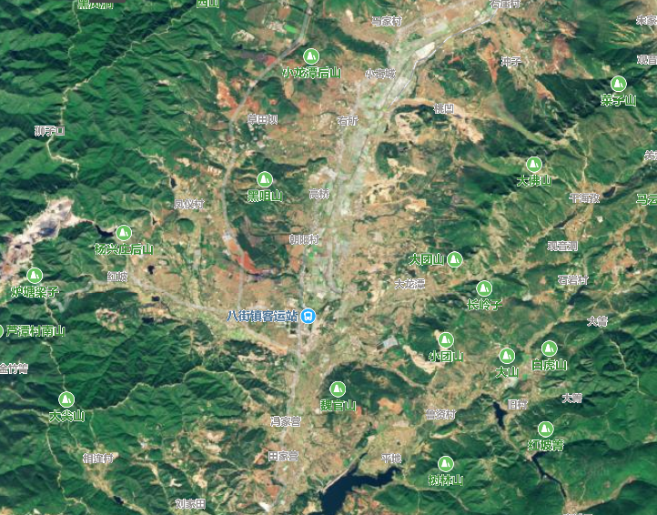

|
八街镇 八街镇地处滇中高原，位于云南省昆明市安宁市西南部，距安宁城38千米，东西分别与晋宁县、易门县接壤，南北分别与安宁市一六街乡、鸣矣河乡毗邻。 八街镇位于安宁市南部，距市区32千米。面积345平方千米，人口4.18万人（2006年）。全镇辖1个社区、21个行政村：八街；八街、招霸、鸣凤、铁厂、堍杉、凤仪、枧槽营、朝阳、中所、二街、窑坡、摩所营、一六、吴里坝、七街、温水、大营、五岳、龙洞、磨南德、相联。镇政府驻八街。有铁、锌、铝、铜、钨、锰、花岗岩、磷等矿藏，为昆明钢铁公司主要矿源基地之一。 |
 |